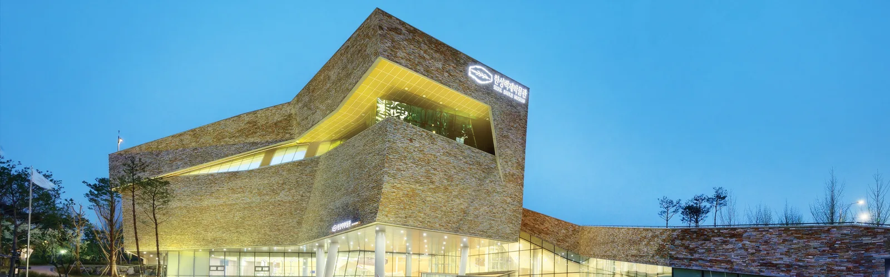
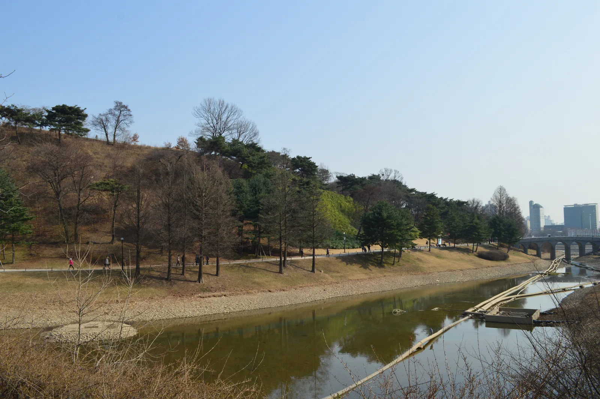
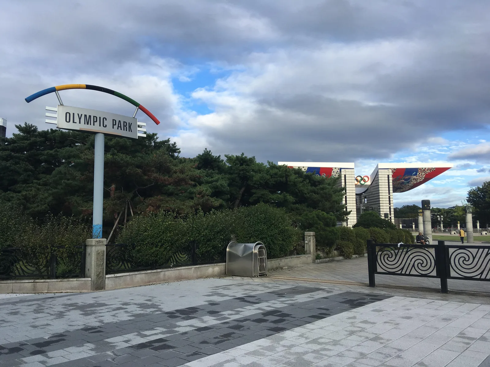
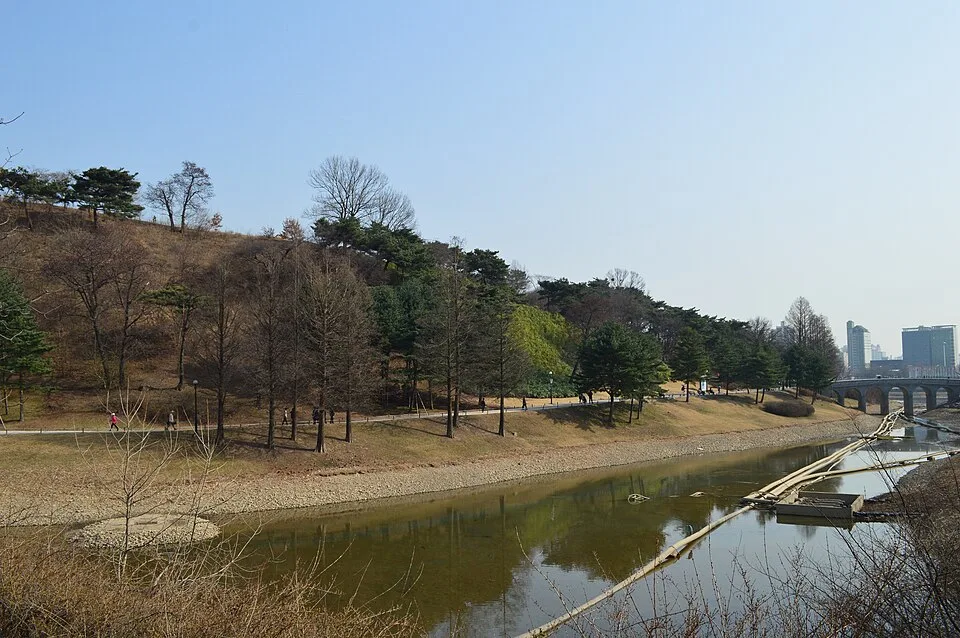
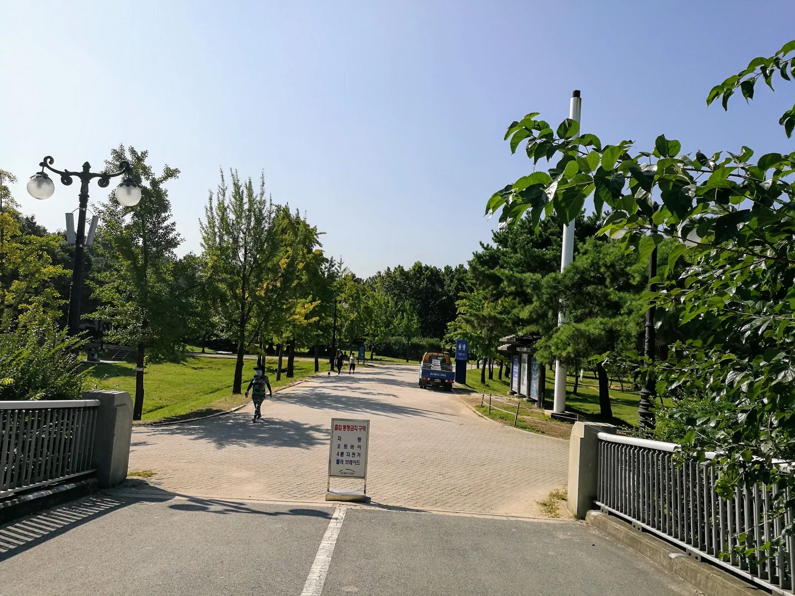
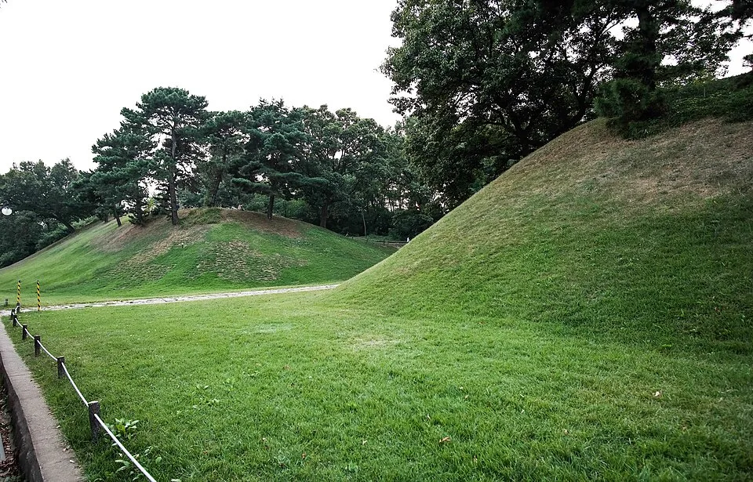
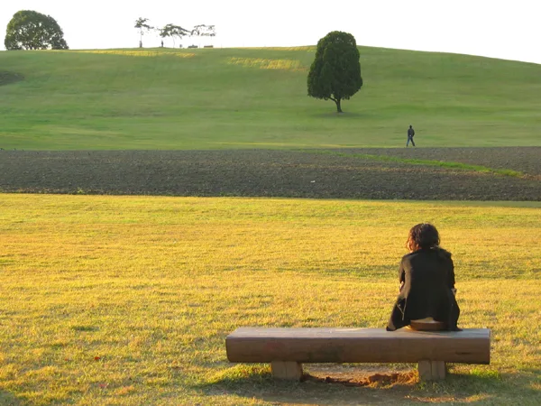
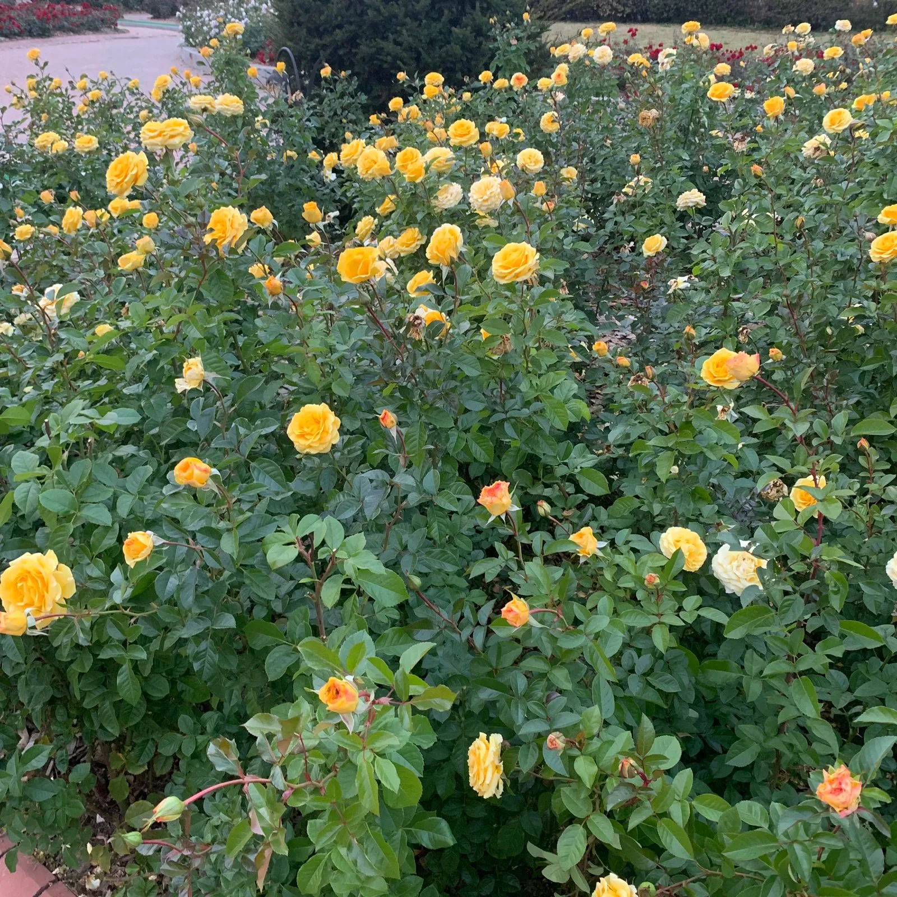

▲ 올림픽공원 내에 자리한 한성백제박물관. 9월 26일 이곳 광장과 로비에서 한가위 큰잔치가 열린다
1. 추석 당일, 박물관 전체가 놀이마당이 된다
서울 송파구 올림픽공원 안에 자리한 한성백제박물관이 추석 당일인 2026년 9월 26일(토) 오전 10시부터 오후 5시까지 '한가위 큰잔치'를 연다. 박물관 광장과 로비, 그리고 바로 옆 서울백제어린이박물관 로비까지 세 개 공간을 무대로 공연마당·참여마당·놀이마당이 동시에 펼쳐지는 구성이다. 평소에도 상설전시 관람료가 무료인 박물관이지만, 이날만큼은 전시 관람을 넘어 온 가족이 함께 참여할 수 있는 체험형 행사로 채워진다.

▲ 박물관 바로 곁에 복원된 몽촌토성. 한성백제 시대의 토성 유적으로, 박물관 관람과 함께 산책하듯 둘러볼 수 있다 ⓒ Wikimedia Commons (CC0)
2. 사전예약은 필요 없다 — 현장 접수로 참여
| 항목 | 내용 |
|---|---|
| 날짜·시간 | 2026년 9월 26일(토) 10:00~17:00 |
| 장소 | 박물관 광장, 로비, 서울백제어린이박물관 로비 |
| 구성 | 공연마당, 참여마당, 놀이마당 |
| 참가 방법 | 사전예약 불필요, 현장 접수 |
| 유의사항 | 인기 프로그램은 대기시간 발생 가능 — 이른 시간 방문 권장 |
| 관람료 | 무료(상설전시 포함) |
행사는 별도 예약 없이 당일 현장에서 접수하면 참여할 수 있다는 점이 특징이다. 다만 전통놀이 체험처럼 인기 있는 프로그램은 대기 줄이 길어질 수 있으므로, 여유롭게 참여하고 싶다면 개장 직후인 오전 시간대에 방문하는 편을 권한다. 공연마당에서는 무대 공연이, 참여마당과 놀이마당에서는 투호·제기차기 등 전통 민속놀이류 체험 프로그램이 주로 운영될 것으로 예상되는데, 구체적인 세부 프로그램 구성은 방문 전 박물관 공식 홈페이지에서 다시 확인하는 것이 안전하다. 바로가기

▲ 올림픽공원 입구. 한성백제박물관은 이 공원 부지 안에 자리하고 있어, 공원 산책과 함께 방문하기 좋다 ⓒ Wikimedia Commons

▲ 몽촌토성을 둘러싼 해자(垓子)와 산책로. 박물관 관람 전후로 성곽을 따라 걷기 좋다 ⓒ Wikimedia Commons
3. 몽촌토성역에서 걸어서 10~15분

▲ 올림픽공원 산책로. 지하철역에서 박물관까지 걸어가는 길에 공원의 가을 풍경을 함께 즐길 수 있다 ⓒ Wikimedia Commons
가장 가까운 지하철역은 8호선 몽촌토성역으로, 1번 출구로 나와 남2문 방향으로 약 650m(도보 10~15분) 걸으면 박물관에 닿는다. 주소는 서울시 송파구 위례성대로 71이다. 자가용을 이용할 경우 올림픽공원 내 주차장을 이용할 수 있는데, 이 주차장은 박물관이 아닌 올림픽공원 관리 시설이어서 박물관 자체 요금표가 그대로 적용되지 않는다. 추석 당일에는 행사와 공원 나들이객이 겹쳐 주차장이 붐빌 가능성이 높으므로, 지하철 이용을 우선 고려하는 편이 여러모로 편하다.
3-1. 그래도 자차라면 — 요금과 전기차 충전기 위치
| 차종 | 요금 | 1일 최대 |
|---|---|---|
| 소형차 | 10분당 600원 | 20,000원 |
| 대형차 | 10분당 1,200원 | 24,000원 |
경차·장애인 차량·저공해차·국가유공자 차량, 2자녀 이상 다자녀가정은 50% 할인을 받는다. 박물관과 가장 가까운 남2문 방향으로 진입하면 남2문주차장이 있는데, 이곳에는 100kW급 DC콤보 급속충전기 4기와 7kW 완속충전기 11기가 24시간 운영되고 있어 전기차로 방문해도 관람 시간 동안 충전을 마칠 수 있다. 다만 올림픽공원은 워낙 부지가 넓어 정문·동문 등 다른 출입구 주차장에 세우면 박물관까지 도보 거리가 크게 늘어나므로, 내비게이션에는 '한성백제박물관'이 아니라 '올림픽공원 남2문' 또는 남2문주차장을 목적지로 잡는 편이 동선을 줄이는 방법이다.
📍 참고로 알아두면 좋은 것
한성백제박물관은 평소 관람시간이 오전 9시부터 오후 7시까지(11~2월 토·일·공휴일은 오후 6시까지)이며, 금요일에는 오후 9시까지 야간개관을 운영한다. 휴관일은 매주 월요일과 1월 1일이다. 한가위 큰잔치 당일에도 전시 관람 자체는 평소와 같이 무료로 가능하니, 행사와 상설전시를 함께 둘러보는 일정을 짜기 좋다.

▲ 소나무 숲이 우거진 몽촌토성 능선. 백제 한성기에 쌓은 흙 성벽이 지금도 뚜렷하게 남아 있다 ⓒ Wikimedia Commons
4. 박물관 옆, 몽촌토성도 함께 걸어보자

▲ 올림픽공원의 너른 잔디밭. 한가위 큰잔치를 즐긴 뒤 가을볕 아래 산책을 이어가기 좋은 코스다 ⓒ Wikimedia Commons
한성백제박물관은 백제 한성기(漢城期)의 역사와 문화를 다루는 서울시 박물관으로, 바로 곁에 한성백제 시대에 쌓은 토성인 몽촌토성이 복원돼 있다. 박물관 전시에서 백제 한성기 유물과 역사를 둘러본 뒤, 한가위 큰잔치 체험까지 마쳤다면 몽촌토성 성곽을 따라 걷는 산책 코스로 자연스럽게 이어가기 좋다. 올림픽공원 자체도 가을철 단풍과 너른 잔디밭으로 유명해, 가족 단위로 하루를 통째로 보내기에도 부담이 없다.
5. 문의처 정리

▲ 가을에도 꽃을 볼 수 있는 올림픽공원 화단. 박물관과 공원을 함께 둘러보는 나들이 코스로 추천할 만하다 ⓒ Wikimedia Commons
세부 프로그램 시간표나 참가 인원 제한 등 최신 공지는 박물관 공식 홈페이지에서 다시 확인하는 것이 안전하다. 문의는 한성백제박물관(☎ 02-2152-5800)으로 하면 된다.
✅ 한성백제박물관 한가위 큰잔치, 이것만은 확인하세요
· 2026년 9월 26일(토) 10:00~17:00, 박물관 광장·로비·서울백제어린이박물관 로비에서 진행
· 공연마당·참여마당·놀이마당 구성, 사전예약 없이 현장 접수로 참여
· 인기 프로그램은 대기시간 발생 가능 — 오전 이른 시간 방문 권장
· 8호선 몽촌토성역 1번 출구에서 도보 10~15분(약 650m)
· 상설전시 관람은 평소처럼 무료, 올림픽공원 주차장(소형 10분 600원, 1일 최대 2만원)은 붐빌 수 있어 대중교통 권장
· 전기차라면 박물관과 가장 가까운 남2문주차장에 급속 4기·완속 11기 24시간 운영 — 내비 목적지는 '남2문'으로
6. 정리
한성백제박물관 한가위 큰잔치는 예약도, 입장료도 필요 없는 접근성이 가장 큰 장점이다. 몽촌토성역에서 도보로 이동할 수 있는 거리에, 박물관 상설전시와 올림픽공원 산책까지 하루 코스로 묶을 수 있어 추석 연휴 가족 나들이로 부담 없이 다녀올 만하다.